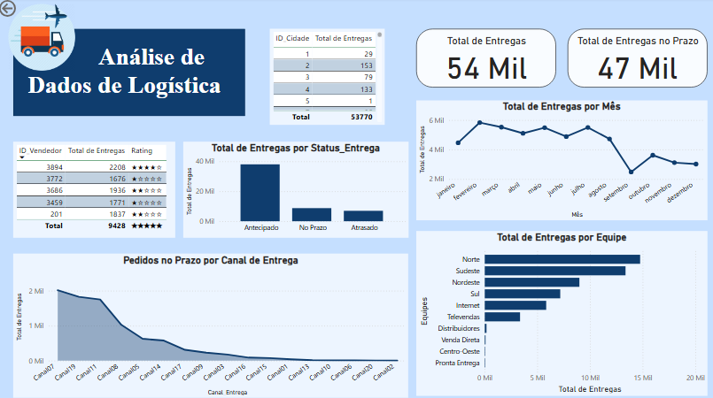
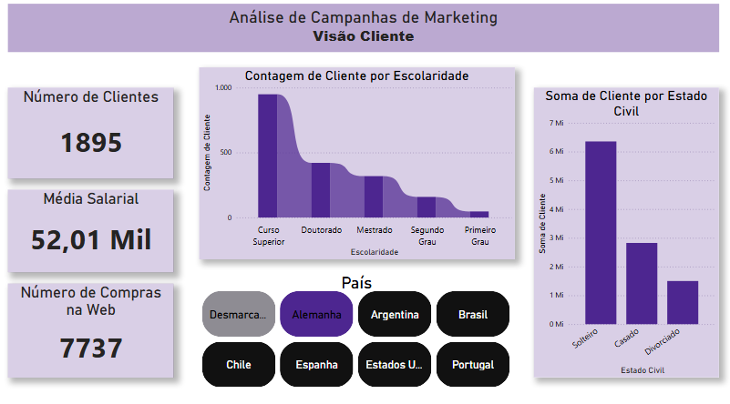
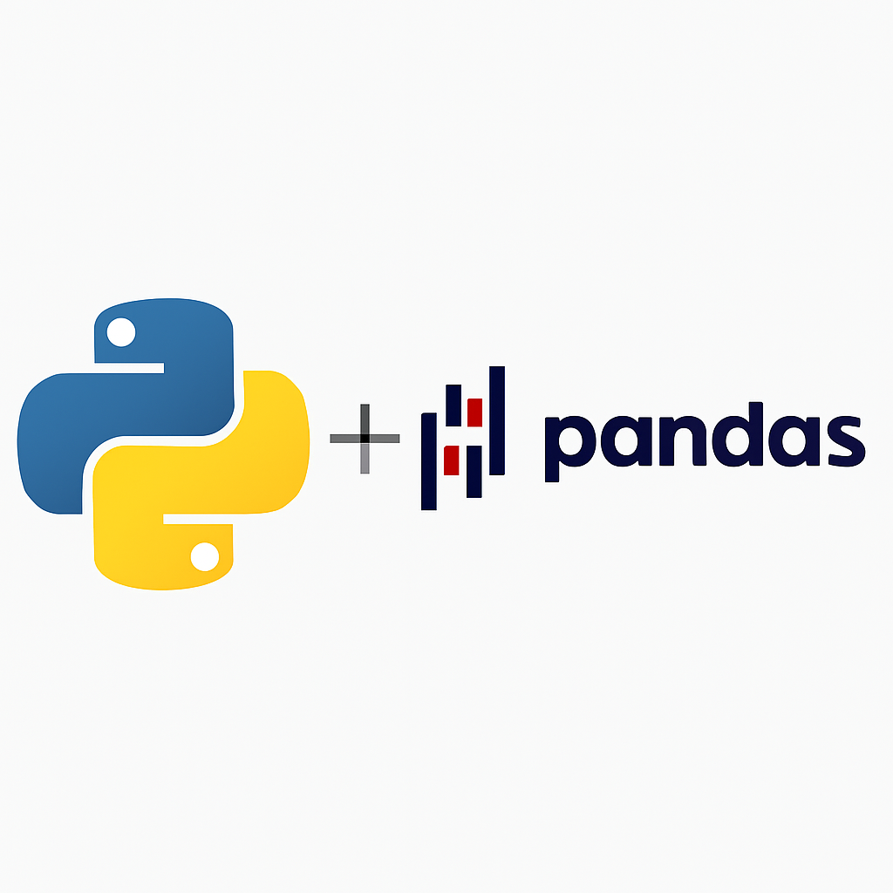

Projetos em Destaque

Dashboard de Logística
Power BI
SQL
Dashboard completo com KPIs logísticos para otimização de rotas, redução de custos e melhoria na eficiência operacional.

Dashboard de Marketing
Power BI
DAX
Análise de performance de campanhas com métricas de ROI, conversão e engajamento para decisões estratégicas.

Manipulação de Dados com Python
Python
Pandas
Processamento e limpeza de datasets com Python, aplicando técnica.
Manipulação de Dados com Python
Python
Pandas
Processamento e limpeza de datasets com Python, aplicando técnica.

Análise Exploratória (Em breve)
Python
Seaborn
Projeto em desenvolvimento: Análise exploratória completa de dataset complexo com visualizações avançadas e insights.